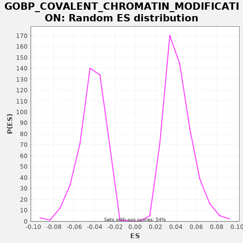

| | | Dataset | A_X_tradeoff |
| Phenotype | NoPhenotypeAvailable |
| Upregulated in class | na_neg |
| GeneSet | GOBP_COVALENT_CHROMATIN_MODIFICATION |
| Enrichment Score (ES) | -0.3109115 |
| Normalized Enrichment Score (NES) | -7.2549543 |
| Nominal p-value | 0.0 |
| FDR q-value | 0.0 |
| FWER p-Value | 0.0 |
Table: GSEA Results Summary
 Fig 1: Enrichment plot: GOBP_COVALENT_CHROMATIN_MODIFICATION
Fig 1: Enrichment plot: GOBP_COVALENT_CHROMATIN_MODIFICATION
Profile of the Running ES Score & Positions of GeneSet Members on the Rank Ordered List
| SYMBOL | RANK IN GENE LIST | RANK METRIC SCORE | RUNNING ES | CORE ENRICHMENT | | 1 | GATA3 | 60 | -0.000 | -0.0008 | No |
| 2 | PRKD2 | 185 | -0.001 | -0.0049 | No |
| 3 | BAZ1A | 379 | -0.002 | -0.0127 | No |
| 4 | IGF2 | 910 | -0.005 | -0.0382 | No |
| 5 | BCL6 | 928 | -0.005 | -0.0367 | No |
| 6 | TAF9 | 941 | -0.005 | -0.0349 | No |
| 7 | RNF2 | 950 | -0.005 | -0.0330 | No |
| 8 | MYOCD | 1030 | -0.006 | -0.0347 | No |
| 9 | JMJD6 | 1108 | -0.006 | -0.0364 | No |
| 10 | FOXP3 | 1326 | -0.007 | -0.0454 | No |
| 11 | CDK9 | 1572 | -0.008 | -0.0559 | No |
| 12 | TADA3 | 1593 | -0.009 | -0.0546 | No |
| 13 | POLE3 | 1693 | -0.009 | -0.0574 | No |
| 14 | GCG | 2296 | -0.013 | -0.0867 | No |
| 15 | RESF1 | 2443 | -0.014 | -0.0920 | No |
| 16 | AASS | 2829 | -0.016 | -0.1099 | No |
| 17 | NR1H4 | 2925 | -0.017 | -0.1125 | No |
| 18 | SIRT3 | 2927 | -0.017 | -0.1101 | No |
| 19 | HDAC10 | 2939 | -0.017 | -0.1083 | No |
| 20 | RPS6KA4 | 3215 | -0.019 | -0.1204 | No |
| 21 | PINK1 | 3278 | -0.019 | -0.1213 | No |
| 22 | PCGF1 | 3431 | -0.020 | -0.1269 | No |
| 23 | TWIST1 | 3738 | -0.022 | -0.1406 | No |
| 24 | HDAC3 | 3800 | -0.023 | -0.1414 | No |
| 25 | MECOM | 3817 | -0.023 | -0.1399 | No |
| 26 | ING2 | 3876 | -0.023 | -0.1406 | No |
| 27 | THAP7 | 4399 | -0.028 | -0.1656 | No |
| 28 | HSF4 | 4478 | -0.029 | -0.1674 | No |
| 29 | HIPK4 | 4655 | -0.030 | -0.1742 | No |
| 30 | NEK11 | 4682 | -0.031 | -0.1732 | No |
| 31 | EYA1 | 4758 | -0.031 | -0.1748 | No |
| 32 | SMYD3 | 4769 | -0.031 | -0.1729 | No |
| 33 | MCRS1 | 4791 | -0.032 | -0.1717 | No |
| 34 | UBE2U | 5125 | -0.035 | -0.1868 | No |
| 35 | KDM4D | 5271 | -0.036 | -0.1920 | No |
| 36 | RTF1 | 5385 | -0.038 | -0.1956 | No |
| 37 | PHF1 | 5453 | -0.039 | -0.1967 | No |
| 38 | AICDA | 5508 | -0.039 | -0.1972 | No |
| 39 | EYA2 | 5640 | -0.041 | -0.2017 | No |
| 40 | TADA2A | 5674 | -0.041 | -0.2011 | No |
| 41 | PKN1 | 5796 | -0.043 | -0.2051 | No |
| 42 | APBB1 | 6048 | -0.046 | -0.2159 | No |
| 43 | MTA3 | 6073 | -0.046 | -0.2147 | No |
| 44 | NTMT1 | 6265 | -0.048 | -0.2224 | No |
| 45 | HDAC5 | 6486 | -0.051 | -0.2316 | No |
| 46 | WDR5B | 6788 | -0.055 | -0.2450 | No |
| 47 | RIOX1 | 6892 | -0.057 | -0.2481 | No |
| 48 | VRK1 | 7025 | -0.059 | -0.2526 | No |
| 49 | ARRB1 | 7166 | -0.061 | -0.2576 | No |
| 50 | HDAC8 | 7198 | -0.061 | -0.2569 | No |
| 51 | HDAC1 | 7245 | -0.062 | -0.2569 | No |
| 52 | UBE2B | 7311 | -0.063 | -0.2579 | No |
| 53 | USP21 | 7411 | -0.064 | -0.2608 | No |
| 54 | TRIM16 | 7556 | -0.066 | -0.2660 | No |
| 55 | HDAC7 | 7663 | -0.068 | -0.2692 | No |
| 56 | TAF12 | 7762 | -0.069 | -0.2719 | No |
| 57 | IRF4 | 7839 | -0.070 | -0.2736 | No |
| 58 | SIN3B | 7856 | -0.071 | -0.2720 | No |
| 59 | PIWIL2 | 7905 | -0.071 | -0.2722 | No |
| 60 | DDB2 | 7906 | -0.071 | -0.2698 | No |
| 61 | CARM1 | 7908 | -0.071 | -0.2675 | No |
| 62 | PRMT2 | 8020 | -0.073 | -0.2709 | No |
| 63 | WDR61 | 8062 | -0.074 | -0.2707 | No |
| 64 | DYDC2 | 8097 | -0.075 | -0.2701 | No |
| 65 | N6AMT1 | 8155 | -0.076 | -0.2707 | No |
| 66 | NELFE | 8208 | -0.077 | -0.2711 | No |
| 67 | FLCN | 8372 | -0.079 | -0.2773 | No |
| 68 | UBE2A | 8404 | -0.080 | -0.2765 | No |
| 69 | TBL1X | 8441 | -0.081 | -0.2760 | No |
| 70 | SETD6 | 8506 | -0.081 | -0.2770 | No |
| 71 | PER1 | 8518 | -0.082 | -0.2752 | No |
| 72 | HDAC6 | 8527 | -0.082 | -0.2733 | No |
| 73 | OTUB2 | 8646 | -0.084 | -0.2771 | No |
| 74 | PRDM14 | 8651 | -0.084 | -0.2749 | No |
| 75 | TADA1 | 8688 | -0.084 | -0.2745 | No |
| 76 | SMARCB1 | 8692 | -0.084 | -0.2722 | No |
| 77 | JADE2 | 8744 | -0.086 | -0.2725 | No |
| 78 | HMGA2 | 8931 | -0.089 | -0.2799 | No |
| 79 | SMYD2 | 8937 | -0.089 | -0.2778 | No |
| 80 | FBXL19 | 8969 | -0.090 | -0.2771 | No |
| 81 | SET | 9091 | -0.091 | -0.2811 | No |
| 82 | LRRK2 | 9194 | -0.093 | -0.2841 | No |
| 83 | JDP2 | 9216 | -0.093 | -0.2828 | No |
| 84 | PPM1F | 9251 | -0.094 | -0.2822 | No |
| 85 | APOBEC1 | 9253 | -0.094 | -0.2799 | No |
| 86 | CDK5 | 9308 | -0.095 | -0.2803 | No |
| 87 | PRDM9 | 9379 | -0.097 | -0.2816 | No |
| 88 | WDR70 | 9383 | -0.097 | -0.2794 | No |
| 89 | SMYD1 | 9487 | -0.099 | -0.2825 | No |
| 90 | TTLL12 | 9588 | -0.101 | -0.2853 | No |
| 91 | PRMT8 | 9621 | -0.101 | -0.2846 | No |
| 92 | PADI3 | 9698 | -0.103 | -0.2863 | No |
| 93 | PHB | 9766 | -0.105 | -0.2874 | No |
| 94 | SETMAR | 9846 | -0.106 | -0.2892 | No |
| 95 | RING1 | 9858 | -0.106 | -0.2874 | No |
| 96 | GATA2 | 9869 | -0.107 | -0.2855 | No |
| 97 | LIF | 9961 | -0.108 | -0.2879 | No |
| 98 | PRMT6 | 10006 | -0.109 | -0.2879 | No |
| 99 | PRDM12 | 10104 | -0.111 | -0.2906 | No |
| 100 | ACTL6A | 10366 | -0.117 | -0.3019 | No |
| 101 | PRDM16 | 10418 | -0.118 | -0.3022 | No |
| 102 | MSL1 | 10521 | -0.120 | -0.3052 | No |
| 103 | SETD3 | 10538 | -0.120 | -0.3037 | No |
| 104 | LEF1 | 10542 | -0.120 | -0.3015 | No |
| 105 | ZMPSTE24 | 10558 | -0.121 | -0.2999 | No |
| 106 | PARK7 | 10747 | -0.125 | -0.3074 | No |
| 107 | DMAP1 | 10768 | -0.126 | -0.3061 | No |
| 108 | SIRT6 | 10805 | -0.127 | -0.3056 | No |
| 109 | SGF29 | 10864 | -0.128 | -0.3062 | No |
| 110 | DTX3L | 10894 | -0.129 | -0.3054 | No |
| 111 | KAT8 | 11000 | -0.132 | -0.3085 | Yes |
| 112 | SETDB2 | 11003 | -0.132 | -0.3063 | Yes |
| 113 | CBX8 | 11005 | -0.132 | -0.3039 | Yes |
| 114 | SUPT7L | 11040 | -0.133 | -0.3034 | Yes |
| 115 | PRDM5 | 11050 | -0.133 | -0.3015 | Yes |
| 116 | HAT1 | 11094 | -0.134 | -0.3013 | Yes |
| 117 | SKI | 11120 | -0.134 | -0.3003 | Yes |
| 118 | TAF6L | 11132 | -0.135 | -0.2985 | Yes |
| 119 | HR | 11133 | -0.135 | -0.2961 | Yes |
| 120 | KDM8 | 11195 | -0.136 | -0.2969 | Yes |
| 121 | CCNA2 | 11244 | -0.138 | -0.2971 | Yes |
| 122 | PHF20 | 11303 | -0.139 | -0.2978 | Yes |
| 123 | SREBF1 | 11315 | -0.140 | -0.2960 | Yes |
| 124 | IL1B | 11507 | -0.144 | -0.3036 | Yes |
| 125 | UBE2N | 11560 | -0.145 | -0.3040 | Yes |
| 126 | PADI1 | 11593 | -0.146 | -0.3033 | Yes |
| 127 | PAX5 | 11692 | -0.149 | -0.3061 | Yes |
| 128 | RPS6KA5 | 11764 | -0.151 | -0.3074 | Yes |
| 129 | TAF10 | 11792 | -0.152 | -0.3064 | Yes |
| 130 | MIER2 | 11794 | -0.152 | -0.3041 | Yes |
| 131 | TRIM28 | 11889 | -0.154 | -0.3067 | Yes |
| 132 | SUV39H2 | 11921 | -0.155 | -0.3059 | Yes |
| 133 | TAF6 | 11947 | -0.155 | -0.3049 | Yes |
| 134 | MPHOSPH8 | 11957 | -0.156 | -0.3030 | Yes |
| 135 | OTUB1 | 11982 | -0.156 | -0.3019 | Yes |
| 136 | KAT2A | 12041 | -0.158 | -0.3025 | Yes |
| 137 | PADI4 | 12062 | -0.158 | -0.3012 | Yes |
| 138 | PADI2 | 12072 | -0.159 | -0.2993 | Yes |
| 139 | TAF5 | 12094 | -0.159 | -0.2980 | Yes |
| 140 | KANSL1L | 12123 | -0.160 | -0.2971 | Yes |
| 141 | MAPK3 | 12124 | -0.160 | -0.2948 | Yes |
| 142 | KAT5 | 12162 | -0.161 | -0.2943 | Yes |
| 143 | PER2 | 12164 | -0.161 | -0.2920 | Yes |
| 144 | BRCC3 | 12186 | -0.162 | -0.2907 | Yes |
| 145 | UBE2E1 | 12193 | -0.162 | -0.2887 | Yes |
| 146 | KAT2B | 12203 | -0.162 | -0.2868 | Yes |
| 147 | PPARGC1A | 12207 | -0.162 | -0.2846 | Yes |
| 148 | MTA2 | 12216 | -0.162 | -0.2826 | Yes |
| 149 | PCGF6 | 12273 | -0.164 | -0.2832 | Yes |
| 150 | TRERF1 | 12317 | -0.165 | -0.2830 | Yes |
| 151 | ZBTB7B | 12384 | -0.167 | -0.2841 | Yes |
| 152 | USP49 | 12403 | -0.167 | -0.2827 | Yes |
| 153 | KANSL2 | 12451 | -0.169 | -0.2828 | Yes |
| 154 | CCNB1 | 12461 | -0.169 | -0.2809 | Yes |
| 155 | BRMS1 | 12536 | -0.171 | -0.2824 | Yes |
| 156 | PYGO2 | 12565 | -0.172 | -0.2815 | Yes |
| 157 | CXXC1 | 12590 | -0.173 | -0.2804 | Yes |
| 158 | COPRS | 12631 | -0.174 | -0.2801 | Yes |
| 159 | PIH1D1 | 12704 | -0.176 | -0.2815 | Yes |
| 160 | MAP3K12 | 12740 | -0.177 | -0.2810 | Yes |
| 161 | SIRT7 | 12776 | -0.178 | -0.2805 | Yes |
| 162 | PWP1 | 12797 | -0.179 | -0.2791 | Yes |
| 163 | BRCA2 | 12814 | -0.179 | -0.2776 | Yes |
| 164 | MTA1 | 12832 | -0.179 | -0.2761 | Yes |
| 165 | ISL1 | 12837 | -0.180 | -0.2740 | Yes |
| 166 | DNMT3B | 12897 | -0.181 | -0.2747 | Yes |
| 167 | JAK2 | 12930 | -0.182 | -0.2740 | Yes |
| 168 | MSL3 | 12974 | -0.183 | -0.2739 | Yes |
| 169 | MEN1 | 13074 | -0.187 | -0.2767 | Yes |
| 170 | PRKAA1 | 13127 | -0.188 | -0.2771 | Yes |
| 171 | KAT14 | 13159 | -0.189 | -0.2763 | Yes |
| 172 | ATF7IP | 13184 | -0.190 | -0.2752 | Yes |
| 173 | UFL1 | 13204 | -0.191 | -0.2738 | Yes |
| 174 | KDM4B | 13262 | -0.193 | -0.2744 | Yes |
| 175 | EZH1 | 13263 | -0.193 | -0.2721 | Yes |
| 176 | SPHK2 | 13297 | -0.194 | -0.2714 | Yes |
| 177 | WDR5 | 13328 | -0.195 | -0.2706 | Yes |
| 178 | KMT2E | 13405 | -0.197 | -0.2722 | Yes |
| 179 | REST | 13438 | -0.199 | -0.2715 | Yes |
| 180 | HLCS | 13482 | -0.200 | -0.2714 | Yes |
| 181 | RLF | 13529 | -0.202 | -0.2715 | Yes |
| 182 | BEND3 | 13542 | -0.202 | -0.2697 | Yes |
| 183 | UIMC1 | 13556 | -0.203 | -0.2680 | Yes |
| 184 | KMT5C | 13568 | -0.203 | -0.2662 | Yes |
| 185 | CDK2 | 13582 | -0.204 | -0.2645 | Yes |
| 186 | RUVBL2 | 13625 | -0.205 | -0.2644 | Yes |
| 187 | MCM3AP | 13644 | -0.206 | -0.2629 | Yes |
| 188 | KDM2B | 13696 | -0.207 | -0.2632 | Yes |
| 189 | LEO1 | 13713 | -0.208 | -0.2617 | Yes |
| 190 | KDM1B | 13727 | -0.208 | -0.2600 | Yes |
| 191 | SPI1 | 13740 | -0.208 | -0.2583 | Yes |
| 192 | EYA4 | 13794 | -0.210 | -0.2587 | Yes |
| 193 | TET2 | 13867 | -0.213 | -0.2601 | Yes |
| 194 | TET1 | 13889 | -0.213 | -0.2588 | Yes |
| 195 | WBP2 | 13913 | -0.214 | -0.2577 | Yes |
| 196 | YEATS2 | 13919 | -0.214 | -0.2555 | Yes |
| 197 | PCGF2 | 13938 | -0.215 | -0.2541 | Yes |
| 198 | PPHLN1 | 13968 | -0.216 | -0.2533 | Yes |
| 199 | ENY2 | 14000 | -0.217 | -0.2525 | Yes |
| 200 | CUL4B | 14005 | -0.217 | -0.2504 | Yes |
| 201 | SNW1 | 14025 | -0.218 | -0.2490 | Yes |
| 202 | ELK4 | 14120 | -0.221 | -0.2515 | Yes |
| 203 | SETD1A | 14153 | -0.223 | -0.2508 | Yes |
| 204 | HDAC4 | 14172 | -0.224 | -0.2494 | Yes |
| 205 | EZH2 | 14174 | -0.224 | -0.2471 | Yes |
| 206 | ARID4A | 14272 | -0.227 | -0.2498 | Yes |
| 207 | BAP1 | 14340 | -0.230 | -0.2510 | Yes |
| 208 | EHMT1 | 14353 | -0.230 | -0.2492 | Yes |
| 209 | PRKD1 | 14364 | -0.231 | -0.2474 | Yes |
| 210 | NAA60 | 14417 | -0.233 | -0.2477 | Yes |
| 211 | PRDM4 | 14458 | -0.234 | -0.2474 | Yes |
| 212 | ATG5 | 14468 | -0.235 | -0.2455 | Yes |
| 213 | MRGBP | 14498 | -0.236 | -0.2447 | Yes |
| 214 | GTF2B | 14542 | -0.237 | -0.2446 | Yes |
| 215 | MTHFR | 14543 | -0.237 | -0.2422 | Yes |
| 216 | MIER1 | 14570 | -0.239 | -0.2412 | Yes |
| 217 | HASPIN | 14582 | -0.240 | -0.2394 | Yes |
| 218 | UBR2 | 14586 | -0.240 | -0.2372 | Yes |
| 219 | SETD5 | 14596 | -0.240 | -0.2353 | Yes |
| 220 | TRMT112 | 14673 | -0.243 | -0.2369 | Yes |
| 221 | UHRF1 | 14691 | -0.245 | -0.2354 | Yes |
| 222 | ING4 | 14701 | -0.245 | -0.2335 | Yes |
| 223 | ASH2L | 14713 | -0.246 | -0.2317 | Yes |
| 224 | PHF19 | 14748 | -0.247 | -0.2311 | Yes |
| 225 | PHC1 | 14771 | -0.248 | -0.2299 | Yes |
| 226 | SIRT2 | 14791 | -0.249 | -0.2285 | Yes |
| 227 | EED | 14822 | -0.250 | -0.2277 | Yes |
| 228 | BRD4 | 14836 | -0.251 | -0.2260 | Yes |
| 229 | TADA2B | 14870 | -0.252 | -0.2254 | Yes |
| 230 | EYA3 | 14876 | -0.253 | -0.2233 | Yes |
| 231 | MAPK8 | 14890 | -0.253 | -0.2216 | Yes |
| 232 | ING3 | 14902 | -0.254 | -0.2198 | Yes |
| 233 | CAMK2D | 14906 | -0.254 | -0.2176 | Yes |
| 234 | ATXN7L3 | 14927 | -0.255 | -0.2162 | Yes |
| 235 | BRMS1L | 14941 | -0.256 | -0.2146 | Yes |
| 236 | BRPF3 | 14946 | -0.256 | -0.2124 | Yes |
| 237 | CHEK1 | 15021 | -0.259 | -0.2139 | Yes |
| 238 | ATXN7 | 15058 | -0.260 | -0.2134 | Yes |
| 239 | CDK1 | 15061 | -0.260 | -0.2112 | Yes |
| 240 | AURKB | 15163 | -0.265 | -0.2141 | Yes |
| 241 | KDM4C | 15192 | -0.266 | -0.2132 | Yes |
| 242 | PHF14 | 15270 | -0.270 | -0.2148 | Yes |
| 243 | AKAP8L | 15331 | -0.273 | -0.2156 | Yes |
| 244 | NOC2L | 15333 | -0.273 | -0.2133 | Yes |
| 245 | MLLT6 | 15391 | -0.275 | -0.2139 | Yes |
| 246 | TAF5L | 15399 | -0.276 | -0.2119 | Yes |
| 247 | EPOP | 15412 | -0.276 | -0.2102 | Yes |
| 248 | CHTOP | 15458 | -0.279 | -0.2102 | Yes |
| 249 | HDAC2 | 15504 | -0.281 | -0.2101 | Yes |
| 250 | MORF4L1 | 15506 | -0.281 | -0.2078 | Yes |
| 251 | KAT6B | 15564 | -0.284 | -0.2084 | Yes |
| 252 | SIRT1 | 15568 | -0.284 | -0.2062 | Yes |
| 253 | RBM14 | 15591 | -0.285 | -0.2050 | Yes |
| 254 | EHMT2 | 15634 | -0.287 | -0.2048 | Yes |
| 255 | USP3 | 15652 | -0.288 | -0.2034 | Yes |
| 256 | RBBP5 | 15663 | -0.289 | -0.2015 | Yes |
| 257 | CRTC2 | 15676 | -0.289 | -0.1998 | Yes |
| 258 | PRKCD | 15697 | -0.290 | -0.1984 | Yes |
| 259 | KANSL3 | 15789 | -0.295 | -0.2008 | Yes |
| 260 | VEGFA | 15816 | -0.296 | -0.1998 | Yes |
| 261 | RCOR3 | 15891 | -0.301 | -0.2013 | Yes |
| 262 | KMT2D | 15893 | -0.301 | -0.1990 | Yes |
| 263 | PHF2 | 15905 | -0.301 | -0.1972 | Yes |
| 264 | RNF40 | 15908 | -0.301 | -0.1950 | Yes |
| 265 | PRMT5 | 15948 | -0.303 | -0.1946 | Yes |
| 266 | RNF8 | 15997 | -0.306 | -0.1948 | Yes |
| 267 | DPY30 | 16018 | -0.307 | -0.1935 | Yes |
| 268 | RIOX2 | 16034 | -0.307 | -0.1919 | Yes |
| 269 | DDB1 | 16052 | -0.308 | -0.1904 | Yes |
| 270 | USP51 | 16068 | -0.309 | -0.1888 | Yes |
| 271 | PARG | 16141 | -0.313 | -0.1902 | Yes |
| 272 | OGT | 16147 | -0.314 | -0.1881 | Yes |
| 273 | KDM5B | 16182 | -0.316 | -0.1875 | Yes |
| 274 | MTF2 | 16184 | -0.316 | -0.1852 | Yes |
| 275 | ASXL1 | 16189 | -0.316 | -0.1830 | Yes |
| 276 | USP36 | 16191 | -0.316 | -0.1807 | Yes |
| 277 | MSL2 | 16194 | -0.316 | -0.1784 | Yes |
| 278 | ING5 | 16210 | -0.317 | -0.1768 | Yes |
| 279 | DOT1L | 16272 | -0.321 | -0.1777 | Yes |
| 280 | TASOR | 16274 | -0.321 | -0.1753 | Yes |
| 281 | IWS1 | 16333 | -0.324 | -0.1760 | Yes |
| 282 | SMAD4 | 16343 | -0.325 | -0.1741 | Yes |
| 283 | PRMT1 | 16390 | -0.328 | -0.1742 | Yes |
| 284 | ATM | 16392 | -0.328 | -0.1718 | Yes |
| 285 | NCOA3 | 16418 | -0.329 | -0.1708 | Yes |
| 286 | JADE3 | 16460 | -0.332 | -0.1705 | Yes |
| 287 | BRPF1 | 16479 | -0.333 | -0.1691 | Yes |
| 288 | BRD7 | 16483 | -0.333 | -0.1669 | Yes |
| 289 | KDM5C | 16490 | -0.334 | -0.1648 | Yes |
| 290 | CHD1 | 16509 | -0.335 | -0.1634 | Yes |
| 291 | USP22 | 16529 | -0.336 | -0.1620 | Yes |
| 292 | GTF3C4 | 16549 | -0.337 | -0.1607 | Yes |
| 293 | NAP1L2 | 16577 | -0.340 | -0.1597 | Yes |
| 294 | GFI1 | 16585 | -0.340 | -0.1577 | Yes |
| 295 | KDM3A | 16596 | -0.341 | -0.1558 | Yes |
| 296 | PHF8 | 16618 | -0.343 | -0.1546 | Yes |
| 297 | RNF168 | 16648 | -0.345 | -0.1537 | Yes |
| 298 | MBD3 | 16665 | -0.347 | -0.1522 | Yes |
| 299 | NSD3 | 16683 | -0.348 | -0.1507 | Yes |
| 300 | CHD5 | 16701 | -0.349 | -0.1492 | Yes |
| 301 | CTR9 | 16720 | -0.350 | -0.1478 | Yes |
| 302 | PAXIP1 | 16721 | -0.351 | -0.1454 | Yes |
| 303 | PRKAA2 | 16723 | -0.351 | -0.1431 | Yes |
| 304 | BRD1 | 16745 | -0.352 | -0.1418 | Yes |
| 305 | KDM4A | 16772 | -0.354 | -0.1408 | Yes |
| 306 | PAF1 | 16782 | -0.355 | -0.1389 | Yes |
| 307 | SUV39H1 | 16830 | -0.358 | -0.1390 | Yes |
| 308 | KMT2B | 16842 | -0.359 | -0.1372 | Yes |
| 309 | WDR82 | 16850 | -0.359 | -0.1352 | Yes |
| 310 | SETD1B | 16864 | -0.360 | -0.1335 | Yes |
| 311 | NAA40 | 16893 | -0.362 | -0.1326 | Yes |
| 312 | PCGF3 | 16937 | -0.365 | -0.1325 | Yes |
| 313 | AURKA | 16986 | -0.370 | -0.1326 | Yes |
| 314 | USP16 | 17022 | -0.373 | -0.1321 | Yes |
| 315 | SIN3A | 17054 | -0.375 | -0.1314 | Yes |
| 316 | SART3 | 17059 | -0.376 | -0.1292 | Yes |
| 317 | PRKCB | 17136 | -0.382 | -0.1308 | Yes |
| 318 | MYSM1 | 17139 | -0.382 | -0.1285 | Yes |
| 319 | CLOCK | 17141 | -0.382 | -0.1262 | Yes |
| 320 | KANSL1 | 17162 | -0.384 | -0.1249 | Yes |
| 321 | MBD2 | 17168 | -0.385 | -0.1228 | Yes |
| 322 | BCOR | 17176 | -0.385 | -0.1208 | Yes |
| 323 | ATF2 | 17196 | -0.387 | -0.1194 | Yes |
| 324 | PPP5C | 17211 | -0.389 | -0.1178 | Yes |
| 325 | NCOA1 | 17253 | -0.392 | -0.1175 | Yes |
| 326 | MECP2 | 17260 | -0.392 | -0.1155 | Yes |
| 327 | BRCA1 | 17269 | -0.393 | -0.1135 | Yes |
| 328 | RYBP | 17275 | -0.394 | -0.1114 | Yes |
| 329 | SUDS3 | 17302 | -0.396 | -0.1104 | Yes |
| 330 | YEATS4 | 17308 | -0.397 | -0.1083 | Yes |
| 331 | BAZ2A | 17315 | -0.398 | -0.1062 | Yes |
| 332 | USP7 | 17325 | -0.398 | -0.1043 | Yes |
| 333 | MEAF6 | 17338 | -0.399 | -0.1026 | Yes |
| 334 | SMARCAD1 | 17355 | -0.401 | -0.1010 | Yes |
| 335 | TAF7 | 17364 | -0.403 | -0.0991 | Yes |
| 336 | KDM3B | 17367 | -0.403 | -0.0968 | Yes |
| 337 | DR1 | 17369 | -0.403 | -0.0945 | Yes |
| 338 | TRIP12 | 17386 | -0.405 | -0.0930 | Yes |
| 339 | TBL1XR1 | 17390 | -0.405 | -0.0907 | Yes |
| 340 | CTBP1 | 17393 | -0.405 | -0.0885 | Yes |
| 341 | HELLS | 17411 | -0.407 | -0.0870 | Yes |
| 342 | HCFC1 | 17445 | -0.411 | -0.0863 | Yes |
| 343 | EP300 | 17453 | -0.412 | -0.0843 | Yes |
| 344 | EP400 | 17482 | -0.415 | -0.0834 | Yes |
| 345 | KMT5A | 17533 | -0.421 | -0.0837 | Yes |
| 346 | WAC | 17553 | -0.422 | -0.0823 | Yes |
| 347 | KDM2A | 17557 | -0.422 | -0.0801 | Yes |
| 348 | MORF4L2 | 17567 | -0.423 | -0.0782 | Yes |
| 349 | RCOR1 | 17570 | -0.424 | -0.0759 | Yes |
| 350 | MAP3K7 | 17640 | -0.431 | -0.0772 | Yes |
| 351 | KDM6A | 17673 | -0.434 | -0.0765 | Yes |
| 352 | PAXBP1 | 17676 | -0.434 | -0.0742 | Yes |
| 353 | KAT7 | 17738 | -0.442 | -0.0750 | Yes |
| 354 | EPC2 | 17746 | -0.443 | -0.0730 | Yes |
| 355 | BMI1 | 17763 | -0.445 | -0.0715 | Yes |
| 356 | NSD1 | 17764 | -0.445 | -0.0691 | Yes |
| 357 | CREBBP | 17787 | -0.447 | -0.0679 | Yes |
| 358 | KMT5B | 17799 | -0.449 | -0.0661 | Yes |
| 359 | KDM5A | 17802 | -0.449 | -0.0638 | Yes |
| 360 | TRRAP | 17815 | -0.450 | -0.0621 | Yes |
| 361 | UBR5 | 17825 | -0.451 | -0.0602 | Yes |
| 362 | SETDB1 | 17835 | -0.452 | -0.0583 | Yes |
| 363 | PRKCA | 17836 | -0.452 | -0.0559 | Yes |
| 364 | TAF1 | 17844 | -0.453 | -0.0539 | Yes |
| 365 | PRMT7 | 17856 | -0.455 | -0.0521 | Yes |
| 366 | AKAP8 | 17877 | -0.458 | -0.0508 | Yes |
| 367 | PHF20L1 | 17933 | -0.465 | -0.0513 | Yes |
| 368 | EPC1 | 17940 | -0.466 | -0.0492 | Yes |
| 369 | TET3 | 17945 | -0.467 | -0.0471 | Yes |
| 370 | ZZZ3 | 17951 | -0.468 | -0.0450 | Yes |
| 371 | AUTS2 | 17986 | -0.472 | -0.0444 | Yes |
| 372 | KDM6B | 17994 | -0.473 | -0.0424 | Yes |
| 373 | HDAC9 | 18000 | -0.474 | -0.0402 | Yes |
| 374 | SETD2 | 18018 | -0.476 | -0.0388 | Yes |
| 375 | LDB1 | 18021 | -0.477 | -0.0365 | Yes |
| 376 | RCOR2 | 18037 | -0.479 | -0.0349 | Yes |
| 377 | SRCAP | 18044 | -0.481 | -0.0328 | Yes |
| 378 | NIPBL | 18080 | -0.488 | -0.0323 | Yes |
| 379 | RNF20 | 18086 | -0.489 | -0.0302 | Yes |
| 380 | RUVBL1 | 18112 | -0.493 | -0.0291 | Yes |
| 381 | DCAF1 | 18143 | -0.499 | -0.0283 | Yes |
| 382 | CTCF | 18189 | -0.505 | -0.0283 | Yes |
| 383 | PCGF5 | 18220 | -0.511 | -0.0275 | Yes |
| 384 | DNMT3A | 18221 | -0.511 | -0.0251 | Yes |
| 385 | SETD7 | 18260 | -0.519 | -0.0248 | Yes |
| 386 | USP15 | 18275 | -0.522 | -0.0231 | Yes |
| 387 | MBIP | 18288 | -0.525 | -0.0214 | Yes |
| 388 | NSD2 | 18301 | -0.527 | -0.0196 | Yes |
| 389 | FMR1 | 18315 | -0.530 | -0.0179 | Yes |
| 390 | INCENP | 18354 | -0.538 | -0.0176 | Yes |
| 391 | CDC73 | 18413 | -0.551 | -0.0182 | Yes |
| 392 | JMJD1C | 18415 | -0.551 | -0.0159 | Yes |
| 393 | HUWE1 | 18433 | -0.554 | -0.0144 | Yes |
| 394 | NAA50 | 18445 | -0.556 | -0.0126 | Yes |
| 395 | FBL | 18459 | -0.560 | -0.0109 | Yes |
| 396 | KAT6A | 18477 | -0.564 | -0.0095 | Yes |
| 397 | ASH1L | 18481 | -0.566 | -0.0072 | Yes |
| 398 | RIF1 | 18499 | -0.570 | -0.0058 | Yes |
| 399 | CTNNB1 | 18528 | -0.578 | -0.0049 | Yes |
| 400 | TRIM37 | 18552 | -0.585 | -0.0037 | Yes |
| 401 | JARID2 | 18616 | -0.604 | -0.0046 | Yes |
| 402 | GLYR1 | 18644 | -0.613 | -0.0037 | Yes |
| 403 | ATRX | 18664 | -0.616 | -0.0023 | Yes |
| 404 | EID1 | 18682 | -0.623 | -0.0008 | Yes |
| 405 | KDM1A | 18683 | -0.624 | 0.0016 | Yes |
| 406 | JADE1 | 18722 | -0.637 | 0.0019 | Yes |
| 407 | BRD8 | 18745 | -0.646 | 0.0032 | Yes |
| 408 | SUZ12 | 18753 | -0.648 | 0.0052 | Yes |
| 409 | KMT2A | 18759 | -0.649 | 0.0073 | Yes |
| 410 | ACTL6B | 18774 | -0.656 | 0.0089 | Yes |
| 411 | KMT2C | 18818 | -0.680 | 0.0090 | Yes |
| 412 | FBLL1 | 18875 | -0.704 | 0.0085 | Yes |
| 413 | BAZ1B | 18928 | -0.732 | 0.0081 | Yes |
| 414 | MUC1 | 18935 | -0.739 | 0.0102 | Yes |
| 415 | SFPQ | 18979 | -0.761 | 0.0103 | Yes |
| 416 | DNMT1 | 19063 | -0.816 | 0.0083 | Yes |
| 417 | KDM7A | 19171 | -0.931 | 0.0051 | Yes |
| 418 | MT3 | 19223 | -1.001 | 0.0047 | Yes |
| 419 | SNCA | 19238 | -1.018 | 0.0064 | Yes |
| 420 | HDAC11 | 19253 | -1.042 | 0.0080 | Yes |
| 421 | MYB | 19271 | -1.066 | 0.0095 | Yes |
Table: GSEA details [plain text format]

Fig 2: GOBP_COVALENT_CHROMATIN_MODIFICATION: Random ES distribution
Gene set null distribution of ES for GOBP_COVALENT_CHROMATIN_MODIFICATION